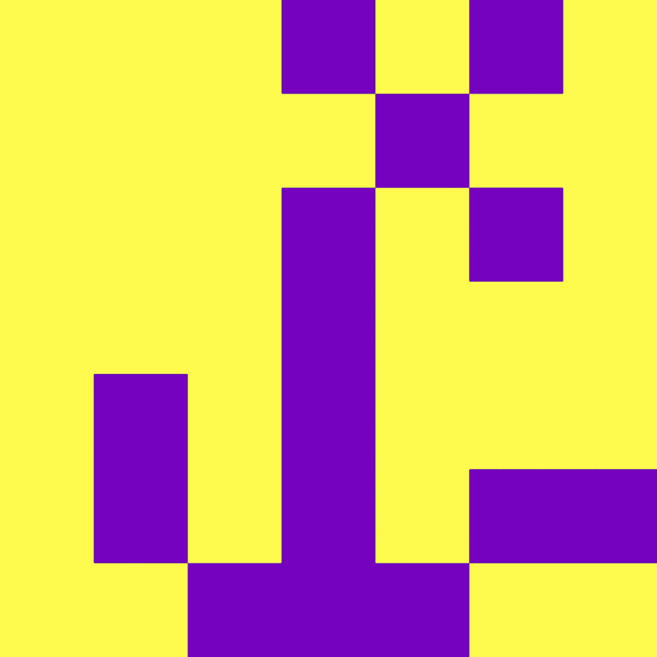

There was one phone call on me, and I couldn't really welcome it. 'What does she want this time again?' I thought. Most of his calls have been made when he had to ask for something from me, rather than simple greetings. What would he say today?
"Could you give me a little support again? You know we need your help to keep my business going.."
"I'm sorry dad, I just have my own things to deal with. I'm not just sitting and reading here. I work hard enough to get paid, and I already have many things to do in my own life."
I wonder why this kind of request is always for me. Why isn't he willing to talk to my young brother about this? Why always me?
(From
An Endless loop)

Umm, it was when I was 14 yrs old, and my little brother was 13. My parents were working during the daytime, so simple cooking and washing dishes were all of our shares. One day she left an empty large bowl in the sink before she went out for work. She asked me to wash it while she's not at home. I went to the sink for washing (it was like 14-15ish pm). But then I found there were many more dishes to be cleaned since we had meals after school. I suddenly found me doing this alone so unfair, despite I was accustomed to it. Although I could have just done it as I used to do, I asked my brother to wash them (for the first time). He said he couldn't. I asked him why he couldn't. Then again he said he just couldn't, because he had never tried. My brain went into a cold because I was honestly shocked that could be a reason that he couldn't. Eventually, I washed all dishes except for the big bowl. Perhaps it was like my last self-respect, leaving at least one thing undone. When my mom came back home she asked me why I didn't wash the bowl. I sincerely asked her :'why does it have to be me who's washing dishes and pushing a button of a laundry machine?' She was speechless. She silently wore rubber gloves to complete the job.
(From
Living as the eldest girl in Korea)
Weirdly, my parents said « The eldest girl is a household fund ». My sacrifice and devotion for family are taken for granted. Whenever my family has economic trouble, I come forward. A few years ago, I lent my parents some millions of won (some ten thousand euros), but yet, I didn’t get the money back.
(From Episodes as a k-eldest girl K-eldest girls by Libby)
When I was in middle school, I asked my parents to buy me an MP3 player. For them, it was unnecessary for a middle school student, so I bought it by myself with my savings. However, when my brother asked for the same thing, they bought it immediately.
(From Episodes as a k-eldest girl K-eldest girls by Prioudiha)
When I was little, my siblings didn’t do any housework. So, I told them « Do this, do that » and mom said « then, step aside. I do all ». That made me feel guilty, because it’s like making my mom work. I couldn’t help doing housework again and again.
(From Episodes as a k-eldest girl K-eldest girls by Seungjin)